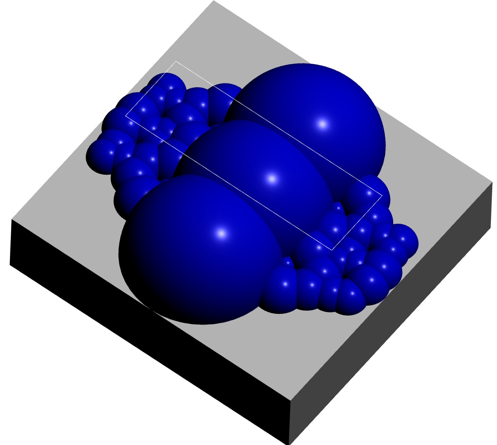
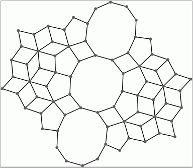
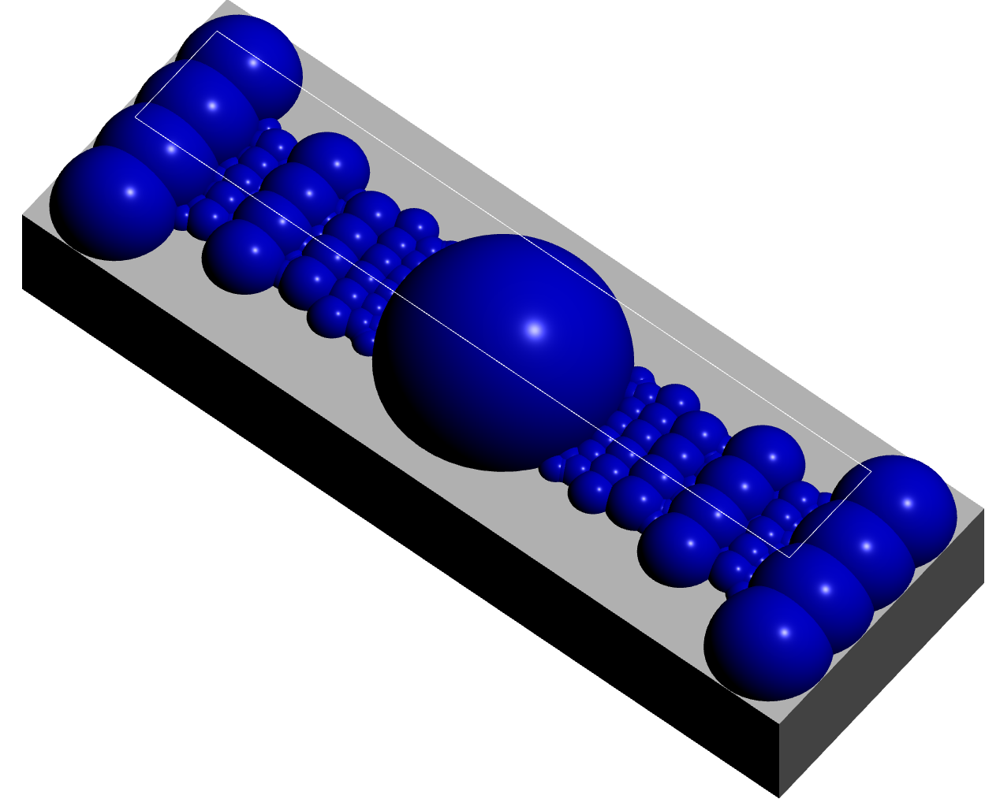
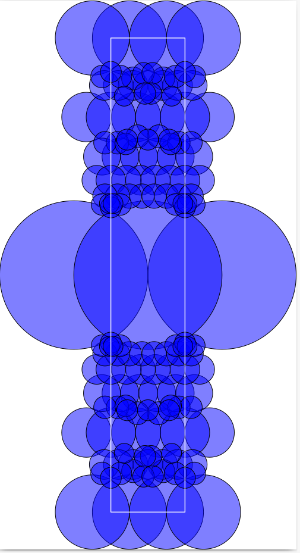
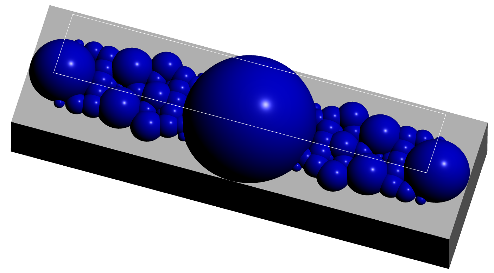
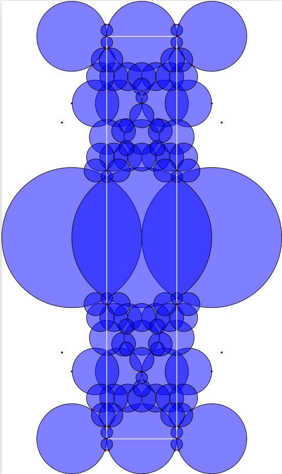

The Bianchi groups are the groups \(G_{-d}=PSL_2({\cal O}_{-d})\) where \(d\) is a square free positive integer and \({\cal O}_{-d}\) is the ring of integers of the imaginary quadratic field \(\mathbb Q(\sqrt{-d})\). These groups act on upper-half space
\[{\frak h}^3 =\{(z,t) \in \mathbb C\times \mathbb R\ |\ t > 0\} \]
by the formula
\[\left(\begin{array}{ll}a&b\\ c &d \end{array}\right)\cdot (z+tj) \ = \ \left(a(z+tj)+b\right)\left(c(z+tj)+d\right)^{-1}\ \]
where we use the symbol \(j\) satisfying \(j^2=-1\), \(ij=-ji\) and write \(z+tj\) instead of \((z,t)\). Alternatively, the action is given by
\[\left(\begin{array}{ll}a&b\\ c &d \end{array}\right)\cdot (z+tj) \ = \ \frac{(az+b)\overline{(cz+d) } + a\overline c t^2}{|cz +d|^2 + |c|^2t^2} \ +\ \frac{t}{|cz+d|^2+|c|^2t^2}\, j \ .\]
We take the boundary \(\partial {\frak h}^3\) to be the Riemann sphere \(\mathbb C \cup \infty\) and let \(\overline{\frak h}^3\) denote the union of \({\frak h}^3\) and its boundary. The action of \(G_{-d}\) extends to the boundary. The element \(\infty\) and each element of the number field \(\mathbb Q(\sqrt{-d})\) are thought of as lying in the boundary \(\partial {\frak h}^3\) and are referred to as cusps. Let \(X\) denote the union of \({\frak h}^3\) with the set of cusps, \(X={\frak h}^3 \cup \{\infty\} \cup \mathbb Q(\sqrt{-d})\). It follows from work of Bianchi and Humbert that the space \(X\) admits the structure of a regular CW-complex (depending on \(d\)) for which the action of \(G_{-d}\) on \({\frak h}^3\) extends to a cellular action on \(X\) which permutes cells. Moreover, \(G_{-d}\) acts transitively on the \(3\)-cells of \(X\) and each \(3\)-cell has trivial stabilizer in \(G_{-d}\). Details are provided in Richard Swan's paper [Swa71b].
We refer to the closure in \(X\) of any one of these \(3\)-cells as a fundamental domain for the action \(G_{-d}\). Cohomology of \(G_{-d}\) can be computed from a knowledge of the combinatorial structure of this fundamental domain together with a knowledge of the stabilizer groups of the cells of dimension \(\le 2\).
A pair \((a,b)\) of elements in \({\cal O}_{-d}\) is said to be unimodular if the ideal generated by \(a,b\) is the whole ring \({\cal O}_{-d}\) and \(a\ne 0\). A unimodular pair can be represented by a hemisphere in \(\overline{\frak h}^3\) with base centred at the point \(b/a \in \mathbb C\) and of radius \(|1/a|\). The radius is \(\le 1\). Think of the points in \({\frak h}^3\) as lying strictly above \(\mathbb C\). Let \(B\) denote the space obtained by removing all such hemispheres from \({\frak h}^3\).
When \(d \equiv 3 {\rm \ mod\ } 4\) let \(F\) be the subspace of \(\overline{\frak h}^3\) consisting of the points \(x+iy+jt\) with \(-1/2 \le x \le 1/2\), \(-1/4 \le y \le 1/4\), \(t \ge 0\). Otherwise, let \(F\) be the subspace of \(\overline{\frak h}^3\) consisting of the points \(x+iy+jt\) with \(-1/2 \le x \le 1/2\), \(-1/2 \le y \le 1/2\), \(t \ge 0\).
It is explained in [Swa71b] that \(F\cap B\) is a \(3\)-cell in the above mentioned regular CW-complex structure on \(X\).
Explicit fundamental domains for certain values of \(d\) were calculated by Bianchi in the 1890s and further calculations were made by Swan in 1971 [Swa71b]. In the 1970s, building on Swan's work, Robert Riley developed a computer program for computing fundamental domains of certain Kleinian groups (including Bianchi groups). In their 2010 PhD theses Alexander Rahm and M.T. Aranes independently developed Pari/GP and Sage software based on Swan's ideas. In 2011 Dan Yasaki used a different approach based on Voronoi's theory of perfect forms in his Magma software for fundamental domains of Bianchi groups. Aurel Page developed software for fundamental domains of Kleinian groups in his 2010 masters thesis. In 2018 Sebastian Schoennenbeck used a more general approach based on perfect forms in his Magma software for computing fundamental domains of Bianchi and other groups. Output from the code of Alexander Rahm and Sebastian Schoennenbeck for certain Bianchi groups has been stored iin HAP for use in constructing free resolutions.
More recently a GAP implementation of Swan's algorithm has been included in HAP. The implementation uses exact computations in \(\mathbb Q(\sqrt{-d})\) and in \(\mathbb Q(\sqrt{d})\). A bespoke implementation of these two fields is part of the implementation so as to avoid making apparently slower computations with cyclotomic numbers. The account of Swan's algorithm in the thesis of Alexander Rahm was the main reference during the implementation.
The fundamental domain \(D=\overline{F \cap B}\) (where the overline denotes closure) has boundary \(\partial D\) involving the four vertical quadrilateral \(2\)-cells contained in the four vertical quadrilateral \(2\)-cells of \(\partial F\). We refer to these as the vertical \(2\)-cells of \(D\). When visualizing \(D\) we ignore the \(3\)-cell and the four vertical \(2\)-cells entirely and visualize only the remaining \(2\)-cells. These \(2\)-cells can be viewed as a \(2\)-dimensional image by projecting them onto the complex plane, or they can be viewed as an interactive \(3\)-dimensional image.
A fundamental domain for \(G_{-39}\) can be visualized using the following commands.
gap> D:=BianchiPolyhedron(-39); 3-dimensional Bianchi polyhedron over OQ( Sqrt(-39) ) involving hemispheres of minimum squared radius 1/39 and non-cuspidal vertices of minimum squared height 1/49 . gap> Display3D(D);; gap> Display2D(D);;

A cusp vertex of \(D\) is any vertex of \(D\) lying in \(\mathbb C \cup \infty\). In the above visualizations for \(G_{-39}\) several cusp vertices in \(\mathbb C\) are : in the 2-dimensional visualization they are represented by red dots. Computer calculations show that these cusps lie in precisely three orbits under the action of \(G_{-d}\). Thus, together with the orbit of \(\infty\) there are four distinct orbits of cusps. By the well-known correspondence between cusp orbits and elements of the class group it follows that the class group of \(\mathbb Q(\sqrt{-39})\) is of order \(4\).
The following additional commands comvert the Bianchi polyhedron \(D\) to a regular CW-complex and then display its \(1\)-skeleton.
gap> D:=BianchiPolyhedron(-39);; gap> Y:=RegularCWComplex(D); Regular CW-complex of dimension 2 gap> Display(GraphOfRegularCWComplex(Y));

A fundamental domain for \(G_{-22}\) can be visualized using the following commands.
gap> D:=BianchiPolyhedron(-22);; gap> Display3D(OQ,D);; gap> Display2D(OQ,D);;


Two cusps are visible in the visualizations for \(G_{-22}\). They lie in a single orbit. Thus, together with the orbit of \(\infty\), there are two orbits of cusps for this group.
A fundamental domain for \(G_{-163}\) can be visualized using the following commands.
gap> D:=BianchiPolyhedron(-163);; gap> Display3D(OQ,D);; gap> Display2D(OQ,D);;
 
There is just a single orbit of cusps in this example, the orbit containing \(\infty\), since \(\mathbb Q(\sqrt{-163})\) is a principal ideal domain and hence has trivial class group.
A fundamental domain for \(G_{-33}\) is visualized using the following commands.
gap> D:=BianchiPolyhedron(-33);; gap> Display3D(OQ,D);; gap> Display2D(OQ,D);;
 
The cusps of a fundamental domain can be calculated independently of the domain computation. The remaining vertices of the domain will have positive heights. To prove that the computation is correct we need to establish that no non-cuspidal vertex lies below any hemishpere centered on the complex plane. As the hemispheres have increasingly smaller radius we only need to check those finitely many hemispheres with radius smaller than the height of the lowest non-cuspidal vertex.
For a few values of \(d\) the smallest radius \(r\) of a hemisphere contributing to the fundamental domain boundary has been stored. For cases where this smallest radius is not stored a very slow method for finding \(r\) is implemented and the user is advised to speed things up by guessiing a value \(N=1/r^2\) and then test that this value of \(N\) is indeed large enough. The following commands illustrate this for \(d=-46\) with a guess of \(N=600\). Once the test is done we can see that in fact a smaller guess of \(N=441\) would have sufficed.
gap> P:=BianchiPolyhedron(-46); Try P:=BianchiPolyhedron(OQ,N); for some guessed positive integer value of N and then try SwanBianchiCriterion(P); to test if the value of N was large enough. If the test returns false then you\ 'll need to try a larger value of N. A successful value of N can be stored as a pair [d,N] in the list HAPRECORD wh\ ich can be edited manually in the file hap/lib/Congruence/bianchi.gi . gap> P:=BianchiPolyhedron(-46,600); 3-dimensional Bianchi polyhedron over OQ( Sqrt( -46) ) involving hemispheres of minimum squared radius 1/ 441 and non-cuspidal vertices of minimum squared height 1/8280 . gap> SwanBianchiCriterion(P); true
The above fundamental domains can be used to construct free resolutions for \(SL_2({\mathcal O}_{-d})\) and \(PSL_2({\mathcal O}_{-d})\). The following commands illustrate the computation of free resolutions for \(SL_2({\mathcal O}_{-43})\) and \(SL_2({\mathcal O}_{-10})\) and \(SL_2({\mathcal O}_{-14})\) and their integral homology (which in each case is periodic of period dividing \(4\) in degrees \(\ge 3\)). The computation of fundamental domains uses exact arithmetic in the two field extensions \(\mathbb Q(\sqrt{d})\) and \( \mathbb Q(\sqrt{-d})\).
gap> K:=BianchiGcomplex(-43);; gap> R:=FreeGResolution(K,11);; gap> C:=TensorWithIntegers(R);; gap> List([0..10],n->Homology(C,n)); [ [ 0 ], [ 0, 0 ], [ 2, 2, 12, 0 ], [ 2, 2, 24 ], [ 2, 2 ], [ 2 ], [ 2, 2, 12 ], [ 2, 2, 24 ], [ 2, 2 ], [ 2 ], [ 2, 2, 12 ] ] gap> K:=BianchiGcomplex(-10);; gap> R:=FreeGResolution(K,11);; gap> List([0..10],k->Homology(TensorWithIntegers(R),k)); [ [ 0 ], [ 2, 2, 0, 0, 0 ], [ 2, 2, 2, 12, 0, 0 ], [ 2, 2, 2, 24 ], [ 2, 4, 12 ], [ 2, 2, 2, 6 ], [ 2, 2, 2, 12 ], [ 2, 2, 2, 24 ], [ 2, 4, 12 ], [ 2, 2, 2, 6 ], [ 2, 2, 2, 12 ] ] gap> K:=BianchiGcomplex(-14);; gap> R:=FreeGResolution(K,11);; gap> List([0..10],k->Homology(TensorWithIntegers(R),k)); [ [ 0 ], [ 6, 0, 0, 0, 0, 0 ], [ 2, 2, 2, 4, 12, 0, 0, 0, 0 ], [ 2, 2, 2, 2, 24 ], [ 2, 2, 2, 4, 12 ], [ 2, 2, 2, 2, 24 ], [ 2, 2, 2, 4, 12 ], [ 2, 2, 2, 2, 24 ], [ 2, 2, 2, 4, 12 ], [ 2, 2, 2, 2, 24 ], [ 2, 2, 2, 4, 12 ] ]
The following commands count the number of orbits of cusps (in addition to the orbit of \(\infty\)). They determine that there is precisely one element in the ideal class group of \({\mathcal O}_{-43}\) (i.e it is a principal ideal domain) and that there are precisely two elements in the ideal class group of \({\mathcal O}_{-10}\) and precisely four elements in the ideal class group of \({\mathcal O}_{-14}\).
gap> K:=BianchiGcomplex(-43);; gap> List([1..K!.dimension(0)],k->Order(K!.stabilizer(0,k))); [ 24, 24, 6, 6, 4, 4, 12, 12 ] gap> K:=BianchiGcomplex(-10);; gap> List([1..K!.dimension(0)],k->Order(K!.stabilizer(0,k))); [ 6, 6, 4, 4, 6, infinity ] gap> K:=BianchiGcomplex(-14);; gap> List([1..K!.dimension(0)],k->Order(K!.stabilizer(0,k))); [ 6, 6, 2, 2, 2, infinity, infinity, 2, infinity, 6, 4 ]
There is ample scope for bugs in the implementation of the above method for computing resolutions of Bianchi groups. The following sanity checks lend confidence to the implementation.
Let \(X\) be any cell complex with an action of a group \(G\) such that (i) \(X\) has finitely many \(G\)-orbits of cells, and (ii) the stabilizer subgroup in \(G\) for each cell is either finite or free abelian. One defines the equivariant Euler characteristic $$\chi_G(X) = \sum_e (-1)^{dim~ e} / |Stab_G(e)|$$ where \(e\) ranges over a set of representatives of the orbits of those cells with finite stabilizers. If \(G\) has a finite index torsion free subgroup and if the complex \(X\) is contractible then one can define the Euler characteristic of the group to be \(\chi(G) = \chi_G(X)\). It is known that \(\chi (SL_n({\mathcal O})) = \chi(GL_n({\mathcal O})) =0\) for \(\mathcal O\) the ring of integers of a number field [DSGG+16].
One easy test to make in our computations is to check that the equivariant Euler characteristic of the \(2\)-complex is indeed zero. The following commands perform this test for the group \(SL_2({\mathcal O}_{-23})\).
gap> K:=BianchiGcomplex(-23);; gap> chi:=0;; gap> for n in [0..2] do > for k in [1..K!.dimension(n)] do > g:=Order(K!.stabilizer(n,k)); > if g < infinity then chi:=chi + (-1)^n/g; fi; > od;od; gap> chi; 0
The signs in the boundary maps of the free resolution are delicate. Another easy test is to check that the boundary in the resolution squares to zero. The following commands perform this check for the group \(SL_2({\mathcal O}_{-23})\).
gap> K:=BianchiGcomplex(-23);; gap> R:=FreeGResolution(K,10);; gap> n:=2;;List([1..R!.dimension(n)],k->ResolutionBoundaryOfWord(R,n-1,R!.boundary(n,k))); [ [ ], [ ], [ ], [ ], [ ], [ ], [ ], [ ], [ ], [ ], [ ], [ ], [ ], [ ], [ ], [ ], [ ], [ ], [ ], [ ], [ ], [ ], [ ], [ ], [ ], [ ], [ ] ] gap> n:=3;;List([1..R!.dimension(n)],k->ResolutionBoundaryOfWord(R,n-1,R!.boundary(n,k))); [ [ ], [ ], [ ], [ ], [ ], [ ], [ ], [ ], [ ], [ ], [ ], [ ], [ ], [ ], [ ], [ ], [ ], [ ], [ ], [ ], [ ], [ ], [ ], [ ], [ ], [ ], [ ] ] gap> n:=4;;List([1..R!.dimension(n)],k->ResolutionBoundaryOfWord(R,n-1,R!.boundary(n,k))); [ [ ], [ ], [ ], [ ], [ ], [ ], [ ], [ ], [ ], [ ], [ ], [ ], [ ], [ ], [ ], [ ], [ ], [ ], [ ], [ ], [ ], [ ], [ ], [ ], [ ], [ ], [ ] ] gap> n:=5;;List([1..R!.dimension(n)],k->ResolutionBoundaryOfWord(R,n-1,R!.boundary(n,k))); [ [ ], [ ], [ ], [ ], [ ], [ ], [ ], [ ], [ ], [ ], [ ], [ ], [ ], [ ], [ ], [ ], [ ], [ ], [ ], [ ], [ ], [ ], [ ], [ ], [ ], [ ], [ ] ]
Sebastian Schoennenbeck in his thesis work computed some contractible \(2\)-complexes on which Bianchi groups act with finite stabilizers (even when the ideal class is greater than \(1\)) using a different approach to that of Swan. These computed complexes are stored in HAP and provide an alternative way of computing cohomology for the stored groups. Alexander Rahm in his thesis work implemented Swan's approach and has provided some \(2\)-complexes that are also stored in HAP in cases where the ideal class is equal to \(1\).
The following commands test that Sebastian Schoennenbeck's \(2\)-complex for \(SL_2({\mathcal O}_{-23})\) yields the same integral homology as the above HAP implementation. Both computations use HAP's implementation of Wall's perturbation technique for computing the resolution from the \(2\)-complex.
gap> K:=ContractibleGcomplex("SL(2,O-23)");; gap> R:=FreeGResolution(K,10);; gap> List([0..9],n->Homology(TensorWithIntegers(R),n)); [ [ 0 ], [ 12, 0, 0, 0 ], [ 2, 2, 12, 0, 0 ], [ 2, 2, 12 ], [ 2, 2, 12 ], [ 2, 2, 12 ], [ 2, 2, 12 ], [ 2, 2, 12 ], [ 2, 2, 12 ], [ 2, 2, 12 ] ] gap> K:=BianchiGcomplex(-23);; gap> R:=FreeGResolution(K,10);; gap> List([0..9],n->Homology(TensorWithIntegers(R),n)); [ [ 0 ], [ 12, 0, 0, 0 ], [ 2, 2, 12, 0, 0 ], [ 2, 2, 12 ], [ 2, 2, 12 ], [ 2, 2, 12 ], [ 2, 2, 12 ], [ 2, 2, 12 ], [ 2, 2, 12 ], [ 2, 2, 12 ] ]
The number of cusps (i.e. the number of orbits of vertices with infinite stabilizer subgroup) must be precisely one less than the number of elements in the ideal class group of \({\mathcal O}_{-d}\). The following commands check this for \(SL_2({\mathcal O}_{-23})\) where \({\mathcal O}_{-23}\) is known to have class number 3. (This class number is easily computed from a formula in Swan's paper.)
gap> K:=BianchiGcomplex(-23);; gap> List([1..K!.dimension(0)],k->Order(K!.stabilizer(0,k))); [ 6, 2, 2, 4, infinity, infinity ]
A visualization of the fundamental domain tells us a certain amount about the algebra. In the case of \(SL_2({\mathcal O}_{-23})\)
a fundamental domain for the action on \(\mathbb C\) by the translation subgroup generated by the matrices $$ \left(\begin{array}{ll} 1 &1\\ 0 &1\end{array}\right), \left(\begin{array}{ll} 1 &\omega\\ 0 &1\end{array}\right) $$ \(\omega = (1+\sqrt{-23})/2\) is indicated by the white rectangle. From this we see that under the action of \(SL_2({\mathcal O}_{-23})\) there are at most \(11\) orbits of \(2\)-cells, the central decagon and ten quadrilaterals. However, the matrix $$ \left(\begin{array}{rr} 0 &-1\\ 1 &0\end{array}\right) $$ maps \((z,0)\) to \((-1/z,0)\) and fixes \((0,1)\). This isometry identifies points on the boundary of the decagon pairwise. These observations are consistent with the above listing of the six orbit stabilizers and the following algebraic information on the boundaries of the \(2\)-cells in the Bianchi \(2\)-complex.
gap> K:=BianchiGcomplex(-23);; gap> List([1..K!.dimension(2)],k->Length(K!.boundary(2,k))); [ 10, 4, 4, 4, 4, 4 ]
Swan's reason for studying fundamental domains was to obtain explicit group presentations for \(SL_2({\mathcal O}_{-d})\) for various values of \(d\). The following commands obtain a presentation for \(SL_2({\mathcal O}_{-23})\).
gap> K:=BianchiGcomplex(-23);; gap> R:=FreeGResolution(K,2);; gap> P:=PresentationOfResolution(R); gap> G:=SimplifiedFpGroup(P!.freeGroup/P!.relators); <fp group on the generators [ k, r, s, w, x ]> gap> RelatorsOfFpGroup(G); [ w^-1*k*w*k^-1, s^-1*r*s*r^-1, k^6, x^-1*k^-3*x*k^-3, s^-1*k^-3*s*k^-3, r^-1*w*x^-1*s*r*w^-1*x*s^-1, r^-1*k^-3*r*k^-3, x*k^-2*r^-1*x*r^-1*s^-1*k^-1*s^-1, x^-1*k^3*s*r*x^-1*s*r ] gap> #Next we identify the generators as matrices gap> GeneratorsOfGroup(P!.freeGroup); [ k, m, n, p, q, r, s, t, u, v, w, x, y, z ] gap> P!.gens; [ 19, 6, 6, 20, 6, 21, 22, 6, 52, 53, 2, 50, 1, 4 ] gap> k:=R!.elts[19]; [ [ 1, 1 ], [ -1, 0 ] ] gap> r:=R!.elts[21]; [ [ 3, 3 + -1 Sqrt(-23) ], [ -3/2 + -1/2 Sqrt(-23), -5 ] ] gap> s:=R!.elts[22]; [ [ 2 + 1 Sqrt(-23), 13/2 + 1/2 Sqrt(-23) ], [ 5/2 + -1/2 Sqrt(-23), -1 Sqrt(-23) ] ] gap> w:=R!.elts[2]; [ [ 3/2 + 1/2 Sqrt(-23), -3/2 + 1/2 Sqrt(-23) ], [ 3/2 + -1/2 Sqrt(-23), 3 ] ] gap> x:=R!.elts[50]; [ [ 11/2 + 1/2 Sqrt(-23), 15/2 + -1/2 Sqrt(-23) ], [ -1 Sqrt(-23), -4 + -1 Sqrt(-23) ] ]
The following commands compute the integral homology of a congruence subgroup \(G\) of index 24 in \(SL_2({\mathcal O}_{-23})\). They also compute a presentation for \(G\) with 13 generators and 24 relators.
gap> OQ:=RingOfIntegers(QuadraticNumberField(-23));; gap> I:=QuadraticIdeal(OQ,[Sqrt(-23)]); ideal of norm 23 in O(Q(Sqrt(-23))) gap> G:=HAP_CongruenceSubgroupGamma0(I); <group of 2x2 matrices in characteristic 0> gap> IndexInSL2O(G); 24 gap> K:=BianchiGcomplex(-23);; gap> R:=FreeGResolution(K,11);; gap> R:=QuadraticToCyclotomicCoefficients(R);; gap> S:=ResolutionFiniteSubgroup(R,G);; gap> List([0..10],n->Homology(TensorWithIntegers(S),n)); [ [ 0 ], [ 2, 0, 0, 0, 0, 0, 0, 0, 0 ], [ 2, 2, 2, 2, 2, 2, 2, 2, 0, 0, 0, 0, 0, 0, 0 ], [ 2, 2, 2, 2, 2, 2, 2, 2 ], [ 2, 2, 2, 2, 2, 2, 2, 2 ], [ 2, 2, 2, 2, 2, 2, 2, 2 ], [ 2, 2, 2, 2, 2, 2, 2, 2 ], [ 2, 2, 2, 2, 2, 2, 2, 2 ], [ 2, 2, 2, 2, 2, 2, 2, 2 ], [ 2, 2, 2, 2, 2, 2, 2, 2 ], [ 2, 2, 2, 2, 2, 2, 2, 2 ] ] gap> P:=PresentationOfResolution(S);; gap> H:=SimplifiedFpGroup(P!.freeGroup/P!.relators); <fp group on the generators [ f8, f10, f15, f70, f86, f125, f132, f138, f182, f187, f191, f273, f279 ]> gap> Length(RelatorsOfFpGroup(H)); 24
generated by GAPDoc2HTML